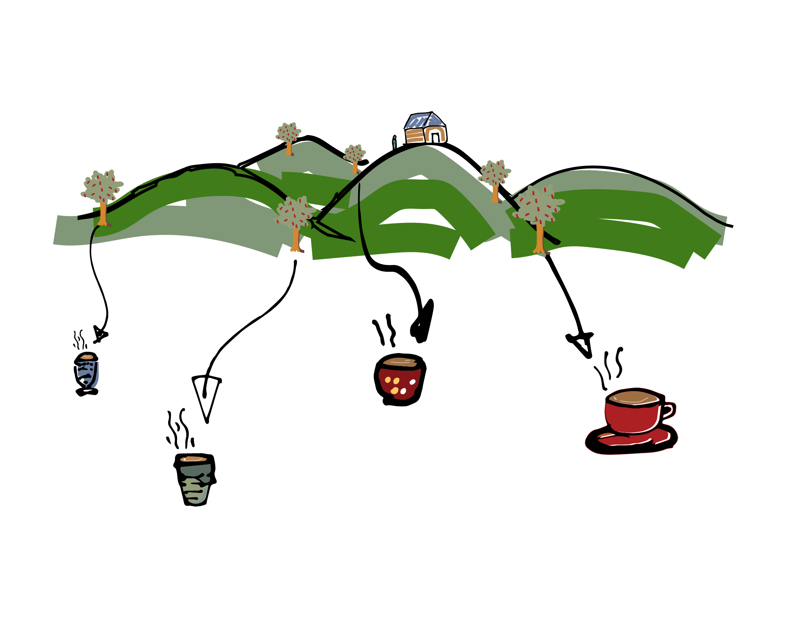
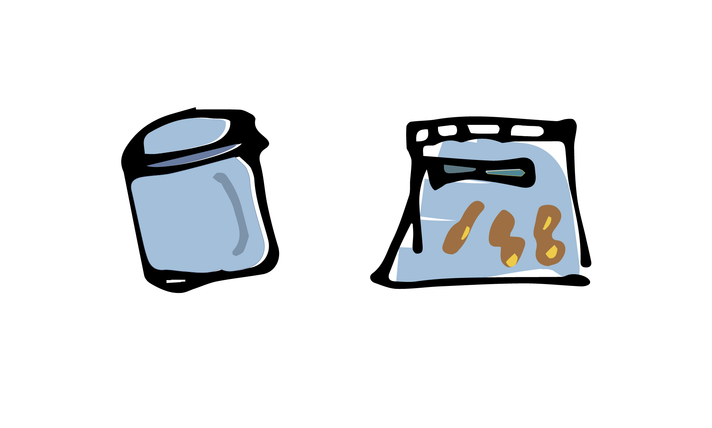

ลักษณะเด่น
โรงคั่วกาแฟขนาดเล็กนี้เกิดจากกลุ่มเพื่อน ๆ 3 คนที่ชอบดื่มกาแฟเป็นประจำ แต่ต้องประสบปัญหาเรื่องการเข้าถึงกาแฟที่แต่ละคนชื่นชอบ โดยเฉพาะรสชาติที่มีมิติซับซ้อนของกาแฟที่ในสังคมปัจจุบันยังไม่ได้รับความนิยมมากนัก ส่งผลให้กาแฟที่มีรสชาติหลากหลายมักจะถูกให้บริการเฉพาะในร้านที่มีราคาสูง หรือร้านกาแฟ specialty ที่ให้บริการกาแฟที่มีความหลากหลายของเมล็ด ระดับการคั่ว วิธีการ process และร้านกาแฟทั่วไปที่ขายในราคาไม่แพงมักไม่มีเมล็ดกาแฟที่หลากหลายหรือระดับการคั่วให้เลือกมากพอ เพราะทางร้านเห็นว่าไม่ได้รับความนิยมจากลูกค้าส่วนใหญ่ และส่งผลต่อต้นทุนที่เพิ่มมากขึ้น ด้วยเหตุผลนี้ จึงเป็นข้อจำกัดของคนชอบดื่มกาแฟที่มีรสชาติหลากหลายและราคาไม่แพงว่าไม่สามารถที่จะหาร้านกาแฟที่ชอบได้ จึงทำให้เกิดกลุ่ม ‘สหกรณ์กาแฟ’ นี้ขึ้นมาเพื่อจะผลิตและจัดหาเมล็ดกาแฟราคาไม่แพงและยังมีรสชาติที่ personalized ให้กับแต่ละคน หลังจากได้ทำมา 1 ปีตั้งแต่กลางปี 2020 ต่อมาเราได้ดำเนินการต่อเป็นโรงคั่วเล็ก ๆ ในพื้นที่บ้านอำเภอดอยสะเก็ด จังหวัดเชียงใหม่ในชื่อ ‘มีพอคั่ว’ ซึ่งหมายถึงการ ‘มีพอ’ ที่ไม่ได้มีมากหรือน้อย แต่สามารถทำการผลิตให้เพียงพอต่อทุกคนรวมถึงตัวเราเองด้วย แม้บางทีจะมีน้อยไม่เพียงพอต่อออเดอร์การสั่งบ้างก็ตาม มาดื่มกาแฟที่คุณชอบไปด้วยกัน

เลือกกาแฟที่คุณชอบ
เนื่องจากเราใช้เครื่องคั่วกาแฟขนาดเล็ก เราจึงสามารถผลิตกาแฟได้ตามที่ทุกคนต้องการไม่ว่าจะสั่งมากน้อยแค่ไหน ทุกคนสามารถเลือกสรรกาแฟที่ชอบได้จาก 3 อย่างหลัก ๆ ประกอบไปด้วย 1) ระดับการคั่ว ไม่ว่าจะเป็นการคั่วอ่อน คั่วกลาง หรือคั่วเข้ม ทำให้เราสามารถผลิตกาแฟที่มีรสชาติเหมาะสมกับแต่ละคนได้ 2) เมล็ดกาแฟที่ชอบ ระดับความสูง processของเมล็ด และ 3) ต้องการให้บดหรือไม่บดเมล็ด เพื่อความสะดวกของแต่ละคนเพราะบางคนไม่ได้มีเครื่องบดไว้ใช้เอง โดยจะมีการบันทึกรสชาติกาแฟที่แต่ละคนชอบเอาไว้เป็น database ของแต่ละคนในการสั่งครั้งต่อไป (เงื่อนไขการบด: ต้องใช้เวลานานกว่าไม่บด เนื่องจากก่อนบด ต้องรอให้เมล็ดคายแก็ซเป็นเวลา 5-7 วันหลังจากวันคั่ว จึงจะสามารถทำการจัดส่งได้ ดังนั้นควรออเดอร์ไว้ล่วงหน้า 1 อาทิตย์ก่อนกาแฟของคุณจะหมด)
- เลือกที่มาของเมล็ดได้
- เลือกระดับการคั่วได้
- เลือกให้บดหรือไม่บดเมล็ดได้

จากสวนถึงบ้าน
นอกเหนือไปจากการผลิตกาแฟที่เหมาะกับแต่ละคนแล้ว เมล็ดกาแฟของเรายังได้มาจากเกษตรโดยตรง โดยมาจากทั่วประเทศไทยที่เราได้สร้างแบบสำรวจออนไลน์เอาไว้ และจัดทำขึ้นเป็น database ของเกษตรกรผู้ที่ต้องการขายสารกาแฟในแบบปลีกที่เหมาะสมกับการคั่วขนาดเล็ก และถ้าหากว่าเพื่อน ๆ มีสวนกาแฟหรือกาแฟที่อยากแนะนำเรา สามารถแจ้งเข้ามาได้เลยตามลิงค์ของด้านล่างที่ เราสามารถเข้าถึง database ของผู้ขายกาแฟได้ตามลิงค์นี้
- มาจากแหล่งที่มาเดียว หรือ single origin ซึ่งจะทำให้เราได้ชิมรสชาติกาแฟจากที่นั้นจริง ๆ
- ได้ลองกาแฟที่มาจากหลากหลายที่ในประเทศไทย

ลดขยะพลาสติก
อีกหนึ่งในข้อคำนึงของทางเราที่นอกเหนือไปจากการสร้างกาแฟที่แต่ละคนชอบ คือความพยายามในการลดขยะ โดยเราได้ยึดหลัก reuse ที่จะพยายามใช้ซ้ำอุปกรณ์ที่เกี่ยวข้องกับการผลิต การดื่มกาแฟให้ได้มากที่สุด เราเห็นว่าสิ่งที่ควรจะถูกนำกลับมาใช้หรือลดการใช้ที่ทำได้ในทันทีเลยก็คือซองบรรจุเมล็ดกาแฟที่มักจะถูกผลิตด้วยพลาสติก แน่นอนว่าส่งผลกระทบการสิ่งแวดล้อมอย่างมาก เราเสนอให้ใช้อุปกรณ์อย่างอื่นในการบรรจุเมล็ดกาแฟที่มั่นคงขึ้นอย่างเช่นกระป๋องสแตนเลสสุญญากาศ และใช้ถุง zip lock ที่เน้นการนำกลับมาใช้ใหม่ในการส่งกาแฟให้ในครั้งต่อ ๆ ไป
- กาแฟของเราจะถูกบรรจุใส่ถุง ziplock เพื่อหวังว่าลูกค้าจะนำถุงไปใช้ซ้ำได้
- หรือสามารถสั่งซื้อถังสังกะสีที่ทำขึ้นมาเพื่อบรรจุกาแฟโดยเฉพาะ